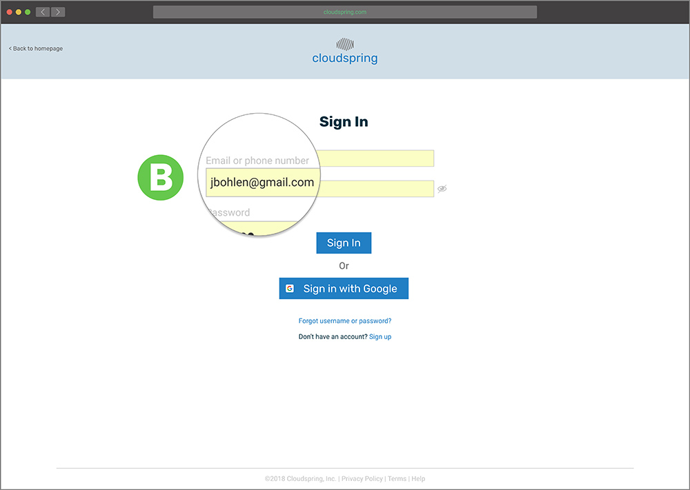
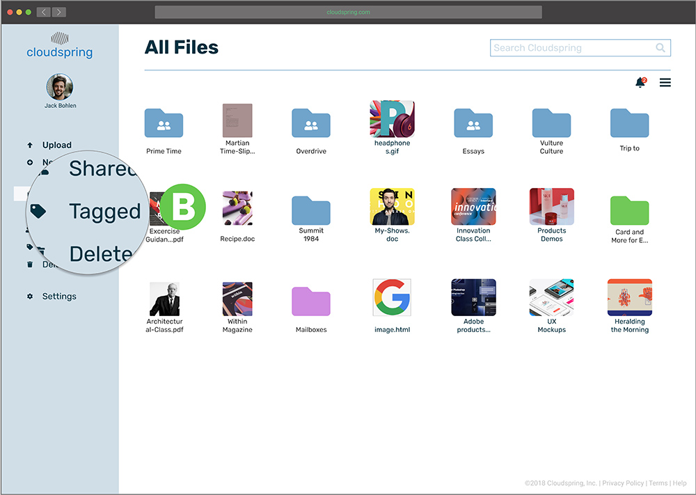
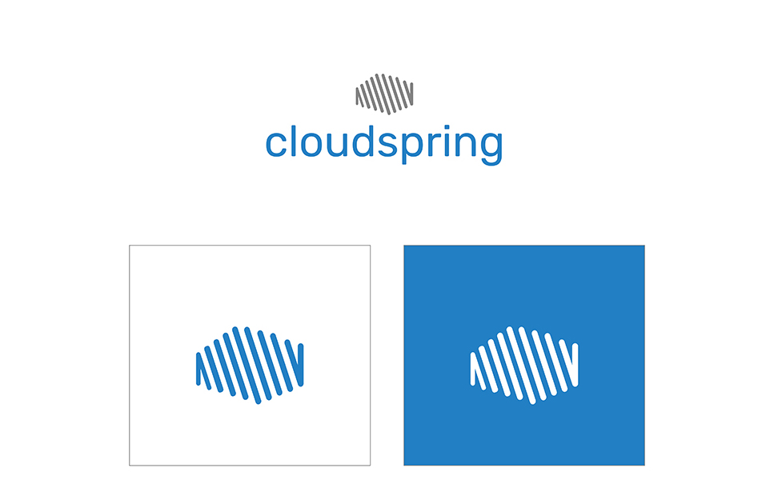
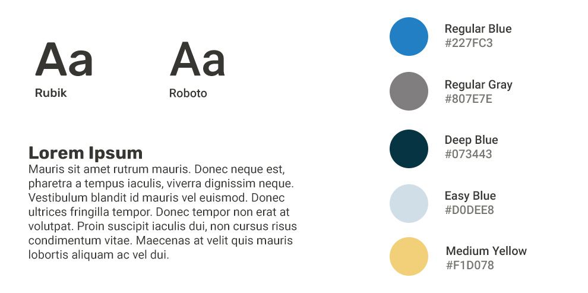
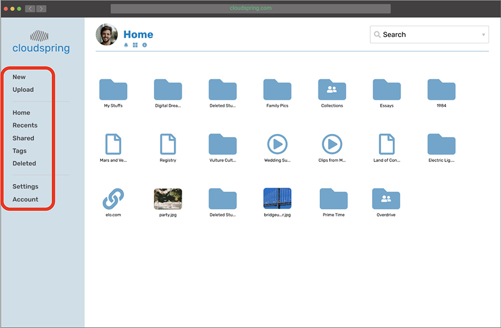
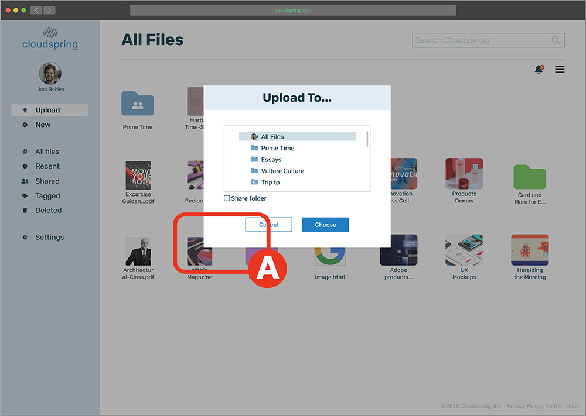
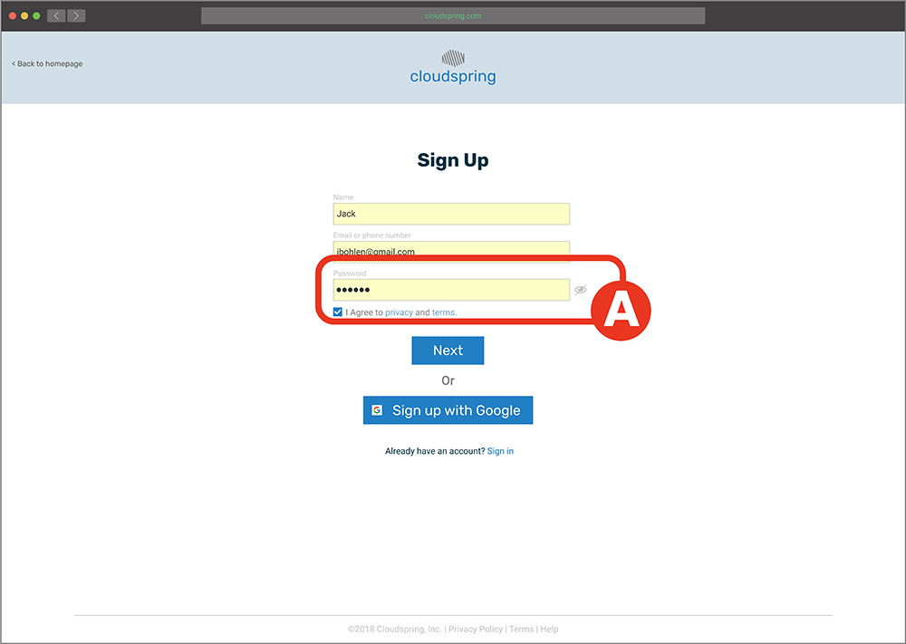

Cloudspring
Product design for a cloud-based file storage.
View Prototype
Project Summary
Summary
The Challenge
The client wanted a cloud storage and organization application. Even though there are other well-known companies in this field, the goal was to focus on the user having an easier interaction when saving, creating, and sharing any kind of content. By doing this, the client believed that a space can open up for this new application. Identifying the target audience was needed for this project, and also developing an identity for the brand.
The Solution
Upon receiving the project and asking follow-up questions to the client, my starting point was to conduct a research to get to know potential users, then progressing to design, and finally zero in on testing, to make sure that the solution will satisfy the end-user. The final solution was an intuitive and easy-to-use app with a modern and minimalist design that invites the user to use it effortlessly. It also filled all the requirements set forth by the client.
The Process
Discovery
- Project brief
- Technical specifications
Analysis
- Research
- Competitive analysis
- Personas
Visual Design
- Mindmaps
- Moodboards
- Style guide
- Hi-fi mockups
- Preference test
Project
Discovery
Project Brief
This, being a new app in the market, the client wanted to make an impact on the productivity of the would-be users. She requested that the app should as MVP at the time of launch:
- Save content found on the web (links, images, videos, etc.).
- Organize content using categories, tags, groups, and/or folders.
- Create content (notes, documents, maybe spreadsheets).
- Upload files (videos, images, PDFs, etc.) from a computer or mobile device.
- Share a single item with someone else.
- Share a folder or group of items with someone else.
- Connect with other users for real-time collaboration.
Roles
- Researcher
- Content Producer
- Usability Tester
- Visual Designer
Deliverables
- Competitive Analysis
- User Personas
- User Stories
- User Flows
- Wireframes
- Branding
- User Testing
- Prototypes

Research
Survey
To get to know the user, I used a survey as a method to do the primary user research. My main focus was to know the user’s priorities when using a storage service, as well as features they like or dislike, and how this web app could help them in their everyday life. These were some of the findings:
51% Use for personal or professional reasons.
52% Create documents and spreadsheets.
100% Collaborate by sharing a link.
38% Organize content by categories, tags or folders.
71% Collaborate with families or co-workers.
71% Upload and stores videos or files.
Research
Competitive Analysis
To have a better understanding of the strength and weaknesses of the competition, I conducted a competitive analysis. I spent quite some time here because I wanted to know what made these services so popular, besides their name recognition. These three competitors were analyzed:
Google Drive integrates all their services into the cloud app, but because of the amount of those services, users can get easily confused. One of the advantages that were discovered was how easy is to find any file and how easy was to collaborate.
Dropbox I found to be very easy to use and its integration with the user’s desktop made it a “plus” feature. On the downside, it doesn't have a built-in spreadsheet creator and the functions are not consistent across devices.
iCloud has a robust content organization feature (folder creation and color tagging), it also has a very integrated document, presentations, and spreadsheet creator. As a minus, the service does not seem very professional, since it gives the impression that is geared towards personal use rather than professional.

Analysis
User Personas
Upon analyzing the user survey, it was time to bring empathy to this data. This was accomplished by crafting 3 different user personas.
 “I would like to store all my files in one place, access them anywhere and easily find them”
“I would like to store all my files in one place, access them anywhere and easily find them”
Mark Abernathy
32 years old
Assistant Video Editor
Motivations
Mark stores a lot of video clips and photos. He also collaborates with others when writing scripts and sends photos to his clients for approval. However, he does not have a lot of storage capacity because is not affordable. Because of this, he finds himself storing some files in his other Dropbox account. He is a visual person and feels frustrated that he can't tag his videos or notes by color for easy identification in any of his storage solutions. He would like to have one economical, large capacity storage solution where he can sync all of his files and organize them in folders.
Goals
- Have a large capacity storage for all his data.
- Create folders, and tag files and notes by color.
- Save or create a file and see it on all his devices.
- Collaborate with other.
Frustrations
- Can’t easily identify his videos or notes.
- Low capacity cloud solution.
- Has to keep two accounts for capacity reasons.
 “I need my devices to be easy to use and have all my assignments ready to share with my students”
“I need my devices to be easy to use and have all my assignments ready to share with my students”
Renée Palmer
45 years old
Teacher
Motivations
Renée uses Dropbox to plan all her classes and share some assignments with her students. Since she teaches many subjects, sometimes is difficult for her to understand the interface and create folders and organize all her courses. She also feels that her current cloud solution is slow when it comes to uploading high-resolution pictures and videos and also syncing with her other devices. She would like to have a cloud solution that offers an easy way to create and see folders, and also that uploads and sync in all her devices instantly.
Goals
- To understand the interface to get things done.
- To easily create folders to organize her projects.
- To upload and sync her files quickly.
Frustrations
- Spent too much time trying to find features.
- Can’t create easily folders.
- Can’t upload and sync fast.
Analysis
User Stories
In order to design with the user’s perspective in mind, I moved on to create user stories based on the information collected on the user survey and also data from the personas. The priorities considered where for a new and returning user. I designed for all the high priorities and some medium and low priorities too.
| Role |
Tasks |
Importance |
| As a new user |
I want sign into my acount |
High |
| As a new user |
I want to sign into my account |
High |
| As a returning user |
I want to log in to my account |
High |
| All users |
I want to create a folder |
High |
| All users |
I want to create a file |
High |
| All users |
I want to upload a folder |
High |
| All users |
I want to upload a file |
High |
| All users |
I want to collaborate |
High |
Analysis
User Flows
To design an intuitive product, I designed user flows based on the user stories. This helped me think once more about the user and how they can accomplish their different tasks as simple as possible. Reviewing the competitive analysis helped me to refine and enhance the flows of the more established cloud storage apps that are known to users.
Fig. User flows done on hand.

Design
Skeching and Wireframes
Finalized the user flows, it was time to start putting the research into a design. I first sketched the different screens on paper and drew them on the computer. After all the screens were done, I performed the first usability test to see how this attempt performed.
Fig. Wireframes done on hand.
Fig. Wireframes done digitally.
Wireframes Testing
It was a challenge to see the user picking apart the design. In some cases the accomplished the task I handed to them, and in some other cases, they just got stuck (Like in the where a user was trying to log in for the first time with his password). I listened closely and watched them, and iterated on the design to remove these friction points.
Where to retrive the code?
Before:

Users where confuse about where they were supposed to retrieve the security code when signing in. A "Did it go to my email"? Some asked. Other users reached to their mobile phones intuitively to retrieve the code.
After:

To solve the issue, I added the option to receive the code on their email or as a text message during the sign-in process B.
Icons on the sidebar
Before:

While I was watching the user interact with the sidebar, I noticed that they were slowing down to make a selection. A This was because they had to read the buttons labels.
After:

The best option to help the user quickly find the buttons was to add icons next to the labels. B At first, I hesitated to do this because I wanted to keep the UI as clean as possible. I performed a preference test (As will be shown later) to make sure this was the correct solution after all. The result was that people overwhelmed preferred the option with the icons. This was an opportunity for me to listen to the users.
Confusing Label "Tags"
Before:

Some user did not know what “Tags” meant . A They were looking everywhere on the interface to complete the task of tagging an item.
After:

During the usability test, I wanted to help the user to find "Tags", but I knew that the problem was that for the user, “tagged” sounded more like a button that they would click and not "tags". Hence, I changed it to "tagged".B
"X" to Close Modals
Before:

For my surprise, a user could not close the modal, because for an oversight I did not add a way to close them before completing an action.A
After:

When I saw the user stuck on that state, I knew that for the next iteration (high fidelity) I had to add an “X” to indicate that the modal can be closed without completing the action. Later on, I opted for a “Cancel” button to accomplish the same action B.
Design
Branding
To start infusing personality to the brand, I started brainstorming some names that can create a connection to the main users. I also used mindmapping to help me funnel the different ideas that were coming to my mind. I settle on the idea of a spring coil and a cloud. Spring coil evoking the storage of energy and the fast or controlled release of it, and the cloud to use it as an anchor of the idea that the files can be accessed easily anywhere. To get to the logo, I studied the shape of a spring coil and a cloud. I did not want the logo to be too literal, but a nod to the components, since the name “Cloudsping”, has the meaning on it.
Logo Sketches

Moodboard

Logo

Icons
The main typography has a rounded feeling, going well with the rounded feel of the icon. The chosen colors are blue (meaning inspiration, creativity, and intelligence) and gray (balance, neutral). The supported icons also have a rounded feeling, playing very well with the brand. I think the approach can work very well since the user will get used to seeing the logo and will remember its meaning and associated it with the cloud storage solution.

Typography and Color
The main typography has a rounded feeling, going well with the rounded feel of the icon. The chosen colors are blue (meaning inspiration, creativity, and intelligence) and gray (balance, neutral). The supported icons also have a rounded feeling, playing very well with the brand. I think the approach can work very well since the user will get used to seeing the logo and will remember its meaning and associated it with the cloud storage solution.

Design
Preference Test
Before releasing the prototype for another round of tests, I performed a preference test on 3 components. This is where I had to listen to the user when they decided that icons on the sidebar made for a better experience (Refer to "Icons on Sidebar").
Icons on Sidebar
83% Preferred sidebar with icons.

17% Preferred sidebar with no icons.
Selecting an Item

54% Preferred feedback of selected item to surround entire icon.

46% Preferred feedback of selected item to surround the file name.
Picture Placement

53% Preferred icon picture in sidebar.
40% Preferred icon picture on top-right bar.
Design
Prototype
To implement the findings of the usability test, and to apply the branding, I created a high fidelity prototype of the app that I could further test with users.
One of the challenges I had to overcome during the low-fi prototype was the way I designed the prototype was a bit confusing to the user because there were so many screens if the user made an unexpected decision, the next screen could be something that they were not expecting. I overcame this issue by re-assembling the prototype and made the flow simpler and linear.
Prototype Testing
To discover what was working after some iteration on the design, I performed a series of usability test on the high fidelity prototype. I conducted 2 remote testings over Skype and 1 in-person test. Following, the changes implemented:
From "Home" to "My Files"
Before

Some users were confused with the heading “Home” A on the dashboard and also on the left-side panel A.
After

To fix this issue, I changed it to read “My files” B.
Separation Between Modal and Background
Before

When a modal was active, some users did not realize the background was not clickable because there was not enough contrast A.
After

A solution was to make the modal’s background a bit darker to establish separation B.
"New Folder" option when uploading
Before

During uploading, some users expressed that they wanted to have an option of creating a new folder to place what they are uploading inside it A.
After

I added the option to create a folder when uploading any file B.
Password strength Indicator
Before

During onboarding, a user expressed that he would feel more comfortable if he can get a suggestion or an indication A of how strong his password was when choosing it.
After
I added an indicator B to help the user choose a strong password.
Prototype Remote Testing
Supplementary to the previous user testing, I conducted a remote usability test to validate that the user could complete different tasks on their own. After the test, I found out that all the given tasks evaluated to more than 90% success. However, I discovered that during the “create document mission”, users were having difficulty in closing the document A. I implemented a change by adding an “X” to facilitate that action B.
Before

Fig. User trying to close the document
After

Fig. "X" added to facilitate closing
Product
Highlights
Product Highlights
At the conclusion of this project, everything the client asked for was delivered:
- Saving content found on the web (links, images, videos, etc).
- Organizing content using categories, tags, groups, and/or folders.
- Creating content (notes, documents, maybe spreadsheets).
- Uploading files (videos, images, PDFs, etc.) from a computer or mobile device.
- Sharing a single item with someone else (and vice-versa).
- Sharing a folder or group of items with someone else (and vice-versa).
- Connecting with other users for real-time collaboration in notes or documents.
Homepage
The design of the homepage is clean and tries to guide the user to sign up for one of the options after giving a tour of all the benefits of the service.
New Document
Since one of the requisites of the project was to have a document creation option, this was provided with the most easy-to-do interface. Focusing also on sharing and collaboration, which according to the client’s guidelines and the research performed, were very important.
Upload a File
The application is not only expected to be a place where users create but also facilitate when users upload data. This we provide by an easy-to-follow interaction.
Collaboration
The opportunity to collaborate on any kind of file is supplied by an easy user experience: Just check a box, provide the medium to alert the guest, set some security measure, and the process is done.
Tagging
Is expected that the user of this app comes many times to share, store and collaborate. To rein-in all the expected data, the easy tagging system would make finding any file a very pleasant experience.
Sharing
Sharing is not only expected by the user but also encouraged by the app. Every time the user wants to perform an action, she can fill confident that will have the opportunity to share that file with others.
What I learned
This project was an excellent experience. At the beginning of the project, and while it was progressing, one of the things that were difficult to me was to see the whole picture: I could not grasp how one process would connect to the other, but now at the conclusion of the project, I can clearly see how all the pieces fit together and anchor the project through the use of a establish process in a good user experience. I also learned to “trust the process”, not just make decisions based on what I think looks good or feels right, but to consult the user at any stage of the project, and see if it’s usable to them.
One of the things that surprised me during the testing phase was how I need to always keep in mind the user: Just because I know how something was designed or works, that does not mean the user will understand it easily.
Given more time, I would have liked to research a bit more the competition and also to spend more time testing other components of the design. I also would like to develop an app as a companion to the website. Even though I think this product delivers to the end user and the client, I believe that it could be improved further in future iterations.